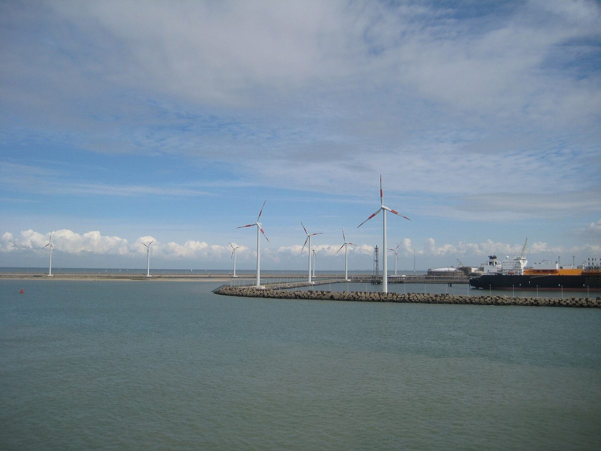

벨기에 브뤼헤시, 지자체 공동 에너지회사 통해 제브뤼헤항 풍력 8기에 최대 약 767만 유로 출자 추진…26일 시의회 표결

사업회사 포르트피네코가 모으는 1,533만5,000유로 가운데 절반은 제피어, 절반은 항만공사 몫…브뤼헤 몫은 최소 약 308만 유로, 시는 추가 배당 기대하고 다년도 재정계획엔 부담 없다고 설명
벨기에 브뤼헤시가 지자체 공동 에너지회사 제피어(Zefier)를 통해 제브뤼헤항 자동차 터미널 부지에 들어설 풍력발전기 8기의 자금에 최대 약 767만 유로를 대는 방안을 추진하며, 시의회는 26일 저녁(현지시각) 시청에서 이 안건을 표결한다. 사업회사 포르트피네코(Portfineco)는 ICO 터미널 부지의 풍력단지 3곳, 모두 8기를 위해 대출 1,433만5,000유로와 증자 100만 유로 등 1,533만5,000유로를 모으고 있으며, 이 가운데 절반인 766만7,500유로는 제피어가, 나머지 절반은 앤트워프-브뤼헤 항만공사가 맡는다. 제피어는 자기 몫을 브뤼헤시와 다른 출자자 34곳이 나눠 인수해 달라고 요청했고, 브뤼헤의 몫은 최소 약 308만 유로이지만 다른 출자자가 인수하지 않으면 제피어 몫 전부까지 커질 수 있어 시 집행부는 최대치까지 인수할 수 있게 해 달라고 시의회에 제안했다. 시의회 안건 설명에 따르면 시는 제피어 안의 투자로 추가 배당을 기대할 수 있고, 시의 다년도 재정계획에는 부정적 영향이 없다. 터빈 8기는 2027년 말까지 세운다는 계획이며, 터빈 출력과 예상 발전량은 공개되지 않았다.
시민에너지 관점
항만 부지에 세울 풍력 8기의 자금 절반을 지자체 공동회사가 대고 그 몫을 시들이 나눠 인수해 배당을 받는 구조는, 재생에너지에서 나온 돈이 외부 투자자가 아니라 공공의 곳간으로 돌아오게 하는 방식이다. 지자체가 발전 사업의 위험을 떠안는다는 우려가 나올 수 있지만, 이번 안은 공동회사 안의 지분 투자로 짜여 시 재정계획에 부담을 주지 않는다는 것이 시의 설명이다. 같은 플랑드르 지역에서는 시민협동조합 에코파워(Ecopower)가 1990년대부터 주민 조합원의 출자로 풍력발전기를 세워 왔다는 점에서, 지자체 지분에 주민 출자가 더해질 때 발전 수익은 지역에 더 깊이 뿌리내릴 수 있다. 우리 지자체도 항만·산업단지 같은 공공 부지의 재생에너지부터 지자체와 주민이 함께 지분을 갖는 공동 출자 구조로 시작해야 한다.
출처: 로칼 니우스(Lokaal Nieuws) 2026-10-25 Jan Maes 원문 보기
ベルギー・ブルッヘ市、自治体共同エネルギー会社を通じゼーブルッヘ港の風力8基に最大約767万ユーロ出資へ…26日に市議会で採決
事業会社ポルトフィネコが集める1,533万5,000ユーロの半分をゼフィール、残り半分を港湾公社が負担…ブルッヘの持ち分は最低約308万ユーロ、市は追加配当を見込み中期財政計画への負担はないと説明
ベルギーのブルッヘ市が、自治体共同エネルギー会社ゼフィール（Zefier）を通じて、ゼーブルッヘ港の自動車ターミナル用地に建つ風力発電機8基の資金に最大約767万ユーロを拠出する案を進めており、市議会は26日夕（現地時間）、市庁舎でこの議案を採決する。事業会社ポルトフィネコ（Portfineco）は、ICOターミナル用地の風力発電所3か所、計8基のために、融資1,433万5,000ユーロと増資100万ユーロの計1,533万5,000ユーロを調達しており、その半分の766万7,500ユーロをゼフィールが、残り半分をアントワープ・ブルッヘ港湾公社が負担する。ゼフィールは自らの持ち分をブルッヘ市とほかの出資者34者で分けて引き受けるよう求めており、ブルッヘの持ち分は最低約308万ユーロだが、ほかの出資者が引き受けなければゼフィールの持ち分全額まで膨らむ可能性があるため、市執行部は上限まで引き受けられるよう市議会に提案した。市議会の議案説明によれば、市はゼフィール内の投資による追加配当が見込め、市の複数年度財政計画への悪影響はない。8基は2027年末までに建設する計画で、タービンの出力や想定発電量は公表されていない。
市民エネルギーの視点
港湾用地に建てる風力8基の資金の半分を自治体の共同会社が出し、その持ち分を各市が分担して配当を受ける仕組みは、再生可能エネルギーが生むお金を外部の投資家ではなく公共の財布に戻す方法だ。自治体が発電事業のリスクを抱えるとの懸念もありうるが、今回の案は共同会社内の持ち分投資として組まれ、市の財政計画に負担をかけないというのが市の説明だ。同じフランデレン地方では市民協同組合エコパワー（Ecopower）が1990年代から住民組合員の出資で風力発電機を建ててきたことを考えれば、自治体の持ち分に住民の出資が加わるとき、発電収益は地域により深く根づきうる。韓国の自治体も、港湾や産業団地のような公共用地の再生可能エネルギーから、自治体と住民がともに持ち分を持つ共同出資の形で始めるべきだ。
出典: ロカール・ニュース（Lokaal Nieuws） 2026-10-25 Jan Maes 原文を読む
比利时布鲁日市拟通过市镇联合能源公司向泽布吕赫港8台风机出资最多约767万欧元…26日市议会表决
项目公司Portfineco筹集的1,533万5,000欧元中一半由Zefier承担、一半由港务公司承担…布鲁日份额最少约308万欧元，市政府称可望获得额外分红且不影响多年度财政计划
比利时布鲁日市正推动一项方案，拟通过市镇联合能源公司Zefier，为泽布吕赫港汽车码头用地上将建的8台风力发电机出资最多约767万欧元，市议会将于26日晚（当地时间）在市政厅表决该议案。项目公司Portfineco正为ICO码头用地上的3个风电场、共8台风机筹集贷款1,433万5,000欧元和增资100万欧元，合计1,533万5,000欧元，其中一半即766万7,500欧元由Zefier承担，另一半由安特卫普-布鲁日港务公司承担。Zefier请求布鲁日市和其他34个出资方分摊认购其份额；布鲁日的份额最少约308万欧元，但若其他出资方不认购，可能增至Zefier份额的全部，因此市执行机构提议市议会允许其认购至上限。据市议会议案说明，市政府可望通过在Zefier内的投资获得额外分红，且对市多年度财政计划没有负面影响。8台风机计划于2027年底前建成，风机功率和预计发电量尚未公布。
市民能源视角
港口用地上8台风机的一半资金由市镇联合公司出资、再由各市分摊份额并获得分红，这种结构让可再生能源产生的收益回到公共财库，而不是流向外部投资者。有人可能担心地方政府会承担发电项目的风险，但按市政府的说明，此次方案设计为联合公司内部的股权投资，不会给市财政计划带来负担。在同一个弗兰德地区，市民合作社Ecopower自1990年代起就靠居民社员出资建设风力发电机；当地方政府的股份再加上居民出资时，发电收益才能更深地扎根于地方。韩国的地方政府也应从港口、产业园区等公共用地的可再生能源做起，建立地方政府与居民共同持股的联合出资结构。
来源: 《Lokaal Nieuws》 2026-10-25 Jan Maes 查看原文
Bruges moves to put up to about €7.67 million into eight Zeebrugge port wind turbines through a joint municipal energy company; council votes on the 26th
Half of the €15,335,000 sought by project company Portfineco would come from Zefier and half from the port authority; Bruges' share is at least about €3.08 million, and the city expects extra dividends with no burden on its multi-year budget
The Belgian city of Bruges is moving to commit up to about €7.67 million, through the joint municipal energy company (intercommunale) Zefier, to finance eight wind turbines planned on the car terminal grounds at the port of Zeebrugge, and the city council will vote on the item at city hall on the evening of 26 October, local time. Project company Portfineco is raising €15,335,000, made up of a €14,335,000 loan and a €1 million capital increase, for three wind farms with eight turbines in total on the ICO terminal site; Zefier would carry half, €7,667,500, and the Port of Antwerp-Bruges the other half. Zefier has asked the city of Bruges and its 34 other partners to take up its share between them; Bruges' portion would be at least about €3.08 million but could rise to Zefier's full amount if other partners do not subscribe, so the city executive has asked the council for permission to go up to that maximum. According to the council agenda, the city can expect additional dividends from the investment within Zefier, with no negative effect on its multi-year financial plan. The eight turbines are due to be built by the end of 2027; their capacity and expected output have not been disclosed.
Citizen Energy View
Having a joint municipal company fund half of eight port wind turbines, with cities sharing out that stake and collecting dividends, is a way of sending the money renewables earn back into public coffers rather than to outside investors. Some may worry that local governments are taking on the risks of a power business, but the city says this plan is structured as an equity investment inside the joint company and puts no strain on its budget. In the same region of Flanders, the citizens' cooperative Ecopower has been building wind turbines with money from resident members since the 1990s, which suggests that when residents' investment is added to municipal stakes, generation income can take deeper root locally. Korean local governments, too, should start with renewables on public land such as ports and industrial parks, built on joint ownership in which councils and residents hold stakes together.
Source: Lokaal Nieuws 2026-10-25 Jan Maes Read the original